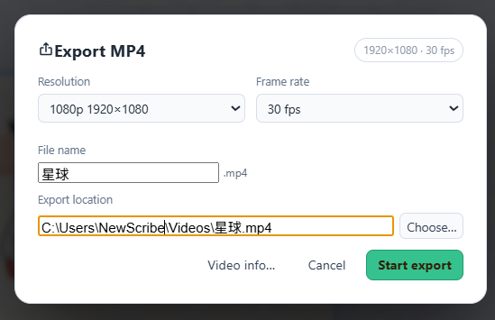

NewScribe user help
Preview and export
Preview checks, export settings, stages, logs and failure diagnosis.

18. Preview and export#
Preview#
Click  Preview or press
Preview or press Ctrl+P.
Preview plays the complete timeline, including entrances, holds,  camera moves, masks, disappearances and audio. It is the best place to check timing and composition.
camera moves, masks, disappearances and audio. It is the best place to check timing and composition.
Watch for elements that appear too quickly,  text that cannot be read, masks that cover the wrong content and audio that does not line up.
text that cannot be read, masks that cover the wrong content and audio that does not line up.
Export#
Click  Export video or press
Export video or press Ctrl+E.
You can choose:
- resolution: 720p, 1080p, 2K, 4K or custom
- frame rate: 24, 25, 30, 50 or 60 fps
- filename
- export location
- video information
Export stages#
prepare drawing data
mix audio
render video frames
drain encoder
mux MP4
write video metadata Export time depends on video length, resolution, element count, asset size,
Export time depends on video length, resolution, element count, asset size,  mask count and computer performance.
mask count and computer performance.
Export log#
A failed export creates a log next to the video:
<video-name>.mp4.export-log.txtThe failure screen offers “View export log”.
A successful export deletes the log by default. Enable “Keep export log” to retain it. If the app is force-closed or the export fails, the log is kept.
Pre-export checklist#
Before exporting, confirm:
- preview has no black frames or missing assets
- fonts and SVG text look correct
- the video length and audio length are acceptable
- there is enough disk space
- the output resolution suits the target platform
- the output filename and location are correct
Slow or stuck export#
Rendering and encoding are separate stages. If the progress sits at the final video percentage, the encoder may be draining its queue, which can take time. Check whether the log is still updating. If there is no change for several minutes, lower the resolution, simplify complex SVG or masks, restart the app, and try again.
High resolution is not automatically better. If the source material is small or blurry, a higher output resolution will not add real detail.